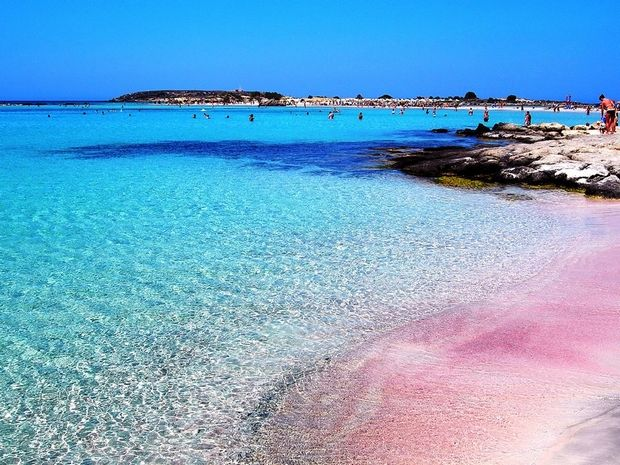
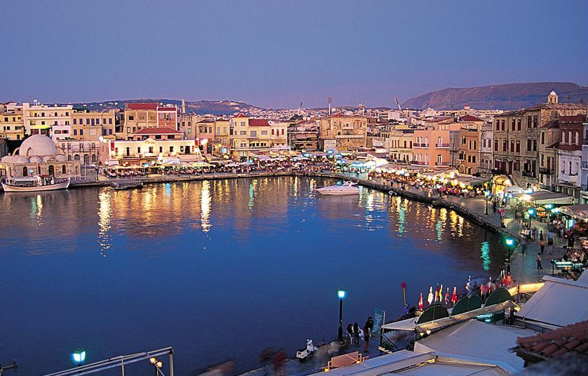

Η Κρήτη είναι το μεγαλύτερο και πολυπληθέστερο νησί της Ελλάδας και το πέμπτο σε έκταση μεγαλύτερο της Μεσογείου, Η Κρήτη αποτελείται από από εκατοντάδες παραλίες. Μερικές από τις οποίες πρέπει να επισκεφτείτε στις διακοπές σας στο νησί είναι: Βάι, Ν. Λασιθίου Μάταλα, Ν. Ηρακλείου Μπάλος, Ν. Χανίων Πρέβελη, Ν. Ρεθύμνου Ελαφονήσι, Ν. Χανίων Άγιος Παύλος, Ν. Ρεθύμνου Ίστρος, Ν. Λασιθίου Φαλάσαρνα, Ν. Χανίων
 